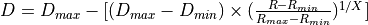

WSF_SPHERICAL_LETHALITY¶
- weapon_effects WSF_SPHERICAL_LETHALITY¶
weapon_effects <name> WSF_SPHERICAL_LETHALITY weapon_effects Commands ... WSF_EXPLICIT_WEAPON_EFFECTS Commands ... ... WSF_SPHERICAL_LETHALITY Commands ... # Pk Table use_pk_table <string-value> pk_table ... end_pk_table end_weapon_effects
Overview¶
WSF_SPHERICAL_LETHALITY computes lethality (i.e. damage) according to the following algorithm:

where:
- R
Slant range distance from detonation location to target platform.
- R min
Minimum distance at which damage will be inflicted
- R max
Maximum distance at which damage will be inflicted
- D min
The damage to be imposed when R = R max
- D max
The damage to be imposed when R = R min
- X
Exponent that specifies the decay rate of the damage.
- X=1
in linear decay of the damage.
- X>1
less rapid decay of the damage.
- X<1
more rapid decay of the damage.
- D thresh
The minimum damage that will be imposed.
- If R > R max
No damage will be imposed
- If R < R min
Maximum damage, D max will be imposed.
- Between R min and R max
Damage will get computed according to the above equation.
The resulting damage factor will be added to the current damage factor of the target platform. If the updated value is greater than or equal to 1.0 then the target platform will be killed.
Commands¶
- minimum_radius <length-value>¶
Specifies the value of R min in the damage equation.
Note
This must be less than the value of maximum_radius.
- maximum_radius <length-value>¶
Specifies the value of R max in the damage equation.
Note
This must be greater than the value of minimum_radius.
- minimum_damage <value>¶
Specifies the value of D min in the damage equation.
Note
This must be in the range [0..1] and must be less than the value of maximum_damage.
Default: 0.0
- maximum_damage <value>¶
Specifies the value of Dmax in the damage equation.
Note
This must be in the range [0..1] and must be greater than the value of minimum_damage.
Default: 1.0
- exponent <value>¶
Specifies the value of X in the above equation.
Note
Value must be greater than zero.
Note
A value of 1.0 indicates a linear decay of damage.
Default: 1.0
- threshold_damage <value>¶
If the target platform has never been damaged, then this is the damage factor threshold that must be achieved by the blast before any damage will occur.
Note
This must be in the range [0..1] and must be less than the value of maximum_damage.
Note
A value of 0.0 will apply damage immediately.
Default: 0.0
Pk Table¶
- use_pk_table <string-value>¶
Sets the name of a Pk table to evaluate upon weapon fusing, in order to compute the threshold value for intercept_pk. At platform initialization, this table name must be known by the PkTable Manager to supply to the weapon. Table will override any value supplied for intercept_pk.
- pk_table … end_pk_table¶
Following is an example input to specify a PkTable while using the use_pk_table option. The pk_table…end_pk_table block must occur either in global context (as all tables are read in by the PkTableManager, and supplied by reference to the weapon), or nested inside of a weapon_effects block. The weapon must request use of the table by employing the use_pk_table option. Each of the one or more tables listed within the pk_table block is tied to a target_type. The independent variables for the table lookup, if not a constant Pk value, will include: target azimuth, target elevation, weapon speed, and target speed. The first target_type listed must be DEFAULT, which is used if there is no more specific match provided below the DEFAULT option. PkTables may be specified as inline_tables, and the “inline_table” keyword is always followed by two integers, the (n) number of azimuths (beginning with zero, as the pk is assumed to be symmetric about the weapon’s XZ plane), and the (m) number of elevations (not assumed symmetric) in increasing order. Then the inline table will contain n X m values of Pk for the weapon to interpolate as the Pk threshold. The kill determination will be 1.0 (total kill) if the uniform random draw is less than the threshold value.
pk_table PkTableName
target_type DEFAULT
constant 0.1
end_target_type
target_type FLANKER
weapon_speed 21 m/s # lower_bound
target_speed 22 m/s
inline_table 2 5
-90 -45 0 45 90
0 0.81 0.81 0.81 0.85 0.81
180 0.81 0.81 0.81 0.84 0.81
end_target_speed
target_speed 33 m/s
inline_table 3 3
-90 0 90
0 0.81 0.81 0.81
90 0.81 0.81 0.81
180 0.81 0.81 0.81
end_target_speed
end_weapon_speed
weapon_speed 34 m/s # upper_bound
target_speed 25 m/s
inline_table 2 5
-90 -45 0 45 90
0 0.81 0.81 0.81 0.85 0.81
180 0.81 0.81 0.81 0.84 0.81
end_target_speed
target_speed 36 m/s
inline_table 2 5
-90 -45 0 45 90
0 0.81 0.81 0.81 0.85 0.81
180 0.81 0.81 0.81 0.84 0.81
end_target_speed
end_weapon_speed
end_target_type
end_pk_table